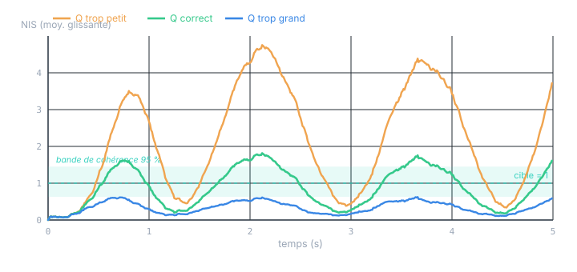

Chapitre 12 · Application
Le même filtre sur PLC : réglage, cohérence, structure
Objectifs du chapitre
- Régler R (mesuré) et σα/Q (curseur) avec méthode.
- Vérifier la cohérence par la NIS et la blancheur de l'innovation — le vrai test d'un filtre embarqué.
- Assurer la stabilité numérique sur automate : forme de Joseph,
LREAL, mises à jour scalaires séquentielles. - Choisir la structure : filtre complet vs observateur à gain constant (α-β), et savoir pourquoi le second gagne presque toujours sur PLC.
1. Régler R, puis Q
Les deux covariances ne se règlent pas de la même façon (chapitre 10), et l'ordre compte.
R = σθ² d'abord, parce qu'il est mesurable. On fige le capteur, on enregistre quelques milliers de points, on calcule la variance. Un inclinomètre annoncé à 0,4° de bruit RMS donne R ≈ 0,16 deg². C'est une donnée du capteur, pas un curseur.
σα (donc Q) ensuite, comme unique curseur. On part de la physique (exercice 1 du chapitre 11) puis on affine avec la règle du chapitre 10 :
- Petit σα : on croit le modèle → sortie très lisse mais lente à réagir (traîne aux vraies variations de vitesse).
- Grand σα : on se méfie du modèle → filtre réactif mais qui laisse repasser du bruit.
Le bon σα n'est pas deviné : il est vérifié. C'est l'objet de la section suivante.
2. Vérifier la cohérence
Un filtre embarqué qui « a l'air de marcher » n'est pas une preuve. Le critère rigoureux est la cohérence : l'incertitude que le filtre annonce (S) doit correspondre à l'erreur qu'il commet réellement. On le teste sans vérité terrain, en ligne, grâce à la NIS (chapitre 10) — calculée ici sur la mesure d'angle scalaire :
Pour un filtre cohérent, la NIS suit une loi du χ² à 1 degré de liberté (mesure scalaire), de moyenne 1. On en trace la moyenne glissante et on vérifie qu'elle reste dans la bande de confiance à 95 %.

On complète la NIS par un test de blancheur : l'autocorrélation de la suite des innovations doit être quasi nulle hors du décalage zéro (chapitre 8). Une innovation encore corrélée dans le temps signale de l'information non exploitée — modèle trop pauvre (passer à l'ordre 2), retard non modélisé, ou biais. La NIS règle l'amplitude de Q ; la blancheur juge la structure du modèle.
La NIS moyenne au-dessus de 1 est le cas dangereux : le filtre sous-estime son erreur, et tout ce qui se fie à son P (une porte de validation, une décision de sécurité) hérite d'une confiance injustifiée. En cas de doute sur PLC, préférez pécher par Q légèrement trop grand (filtre un peu pessimiste mais honnête) que trop petit.
3. Stabilité numérique sur automate
Un filtre qui tourne des semaines sans redémarrage doit résister aux arrondis. Les parades du chapitre 10, déclinées pour un PLC :
- Tout en
LREAL(double précision). LesREAL(32 bits) sont proscrits pour les covariances : les produits F·P·Fᵀ perdent trop de chiffres significatifs et P dérive. - Forme de Joseph pour la mise à jour de P : une somme de termes positifs, symétrique définie positive par construction, là où la forme courte (I−KH)P⁻ peut devenir négative par arrondi.
- Resymétrisation : forcer P ← (P + Pᵀ)/2 à chaque pas coûte quelques opérations et supprime la dérive d'asymétrie.
- Mises à jour scalaires séquentielles : si plusieurs capteurs, traiter chaque mesure l'une après l'autre (bruits indépendants ⇒ R diagonale). Chaque correction n'inverse qu'un scalaire (S) — jamais de matrice à inverser sur le PLC.
- dt fixe et garde-fous : le pas vient de l'OB cyclique, il est constant. Sauter la correction si la mesure manque (et laisser P croître), plutôt que de corriger avec une valeur périmée.
// SCL — mise à jour de Joseph pour le 2×2 (robustesse longue durée).
// P = M·P⁻·Mᵀ + K·R·Kᵀ , avec M = (I - K·H) et H = [1 0].
// D'où M = [[1-k0, 0], [-k1, 1]] ; p**_p = P⁻ issu de la prédiction.
m00 := 1.0 - k0; m01 := 0.0;
m10 := -k1; m11 := 1.0;
// T = M·P⁻
t00 := m00*p00_p + m01*p10_p; t01 := m00*p01_p + m01*p11_p;
t10 := m10*p00_p + m11*p10_p; t11 := m10*p01_p + m11*p11_p;
// P = T·Mᵀ + K·R·Kᵀ (R scalaire)
#P00 := t00*m00 + t01*m01 + k0*#R*k0;
#P01 := t00*m10 + t01*m11 + k0*#R*k1;
#P10 := t10*m00 + t11*m01 + k1*#R*k0;
#P11 := t10*m10 + t11*m11 + k1*#R*k1;
// resymétrisation défensive
#P01 := 0.5*(#P01 + #P10); #P10 := #P01;Cohérence des unités partout. Sur PLC on jongle avec des degrés, des radians, des incréments codeur, des millisecondes. F, H, Q, R et dt doivent partager un système d'unités unique. Une Q en deg² et une R en rad² : tout compile, le filtre est faux sans le moindre message d'erreur. Fixez les unités et documentez-les dans l'UDT.
4. La structure la plus intéressante pour PLC
Voici le cœur de ce chapitre. Faut-il implémenter le filtre complet — prédiction et correction de P, gain recalculé à chaque cycle — ou existe-t-il mieux adapté à un automate ? La réponse tient à une observation faite au chapitre 9 : sur un PLC, les conditions du régime permanent sont réunies presque idéalement.
4.1 Pourquoi le régime permanent s'impose sur PLC
- L'OB cyclique tourne à période fixe : dt est constant, donc F et Q aussi. Le système est exactement invariant dans le temps (LTI) — l'hypothèse même du régime permanent.
- R est fixe (capteur donné), Q est figé une fois réglé.
- Donc (chapitre 9) P et le gain convergent vers des constantes P∞, K∞. Or P et K ne dépendent pas des mesures : on peut les calculer entièrement hors ligne.
L'idée décisive : résoudre l'équation de Riccati une seule fois, sur un PC (Python, quelques lignes), pour obtenir le gain constant K∞ ; puis n'implémenter sur le PLC qu'un observateur à gain constant — la prédiction et la correction de l'état, avec un gain figé. Plus de P, plus de Riccati, plus d'inversion en ligne.
![Schéma d'implémentation sur automate. Un cadre représente l'OB cyclique appelé une fois par cycle. À l'intérieur, un bloc fonctionnel 'IncliVitesse' reçoit la mesure z de l'inclinomètre et la commande u ; il exécute trois lignes : prédiction x⁻ = F·x + B·u, innovation y = z − H·x⁻, correction x = x⁻ + K∞·y, avec des gains K∞ constants notés alpha et beta. Sa sortie est la vitesse estimée qui part vers la régulation. L'état x est mémorisé dans la statique du FB et reboucle vers le cycle suivant. Un encart en bas rappelle que hors ligne, on résout l'équation de Riccati (DARE) une seule fois pour obtenir K∞, sans aucune matrice à inverser en ligne.](figures/fig-incl-plc.svg)
4.2 C'est le filtre α-β
Cet observateur à gain constant sur l'état [θ, ω] porte un nom historique : le filtre α-β. Ses deux gains constants α (sur l'angle) et β (sur la vitesse) sont le gain de Kalman en régime permanent. La récurrence par cycle se réduit à :
y = z − θ⁻
θ = θ⁻ + α·y ω = ω⁻ + (β/dt)·y
L'ordre 2 [θ, ω, α] donne de la même façon le filtre α-β-γ, avec un troisième gain constant sur l'accélération. Une relation de conception classique (Benedict-Bordner) lie les deux gains, β = α² / (2 − α), ce qui ramène le réglage à un seul curseur α ∈ (0,1) ; les gains strictement Kalman-optimaux, eux, sortent de la résolution de la Riccati à partir de Q et R.
// SCL — observateur à gain constant (α-β), 1er ordre + commande.
// alpha, beta, dt : constantes ; état #th, #om en statique du FB.
th_p := #th + #om*#dt + 0.5*#u*#dt*#dt; // prédiction angle (avec commande)
om_p := #om + #u*#dt; // prédiction vitesse
y := #z - th_p; // innovation (scalaire)
#th := th_p + #alpha * y;
#om := om_p + (#beta / #dt) * y; // ← vitesse estimée
#omEstime := #om; // sortie vers la régulationComptez les opérations : une poignée de multiplications-additions, zéro inversion, zéro matrice propagée. Le coût par cycle est constant et dérisoire — idéal pour un OB rapide à échéance dure.
Pourquoi c'est la meilleure structure sur PLC.
- Déterminisme et coût minimal : quelques MAC par cycle, temps d'exécution borné et constant — ce qu'exige un OB temps réel. Pas de recalcul de covariance, pas d'inversion.
- Robustesse numérique totale : aucune matrice P propagée en ligne ⇒ impossible de perdre symétrie ou positivité, impossible de diverger numériquement. Le gain est une constante validée hors ligne.
- Simplicité d'audit : trois lignes de SCL, lisibles et certifiables. Précieux en contexte normatif (sécurité machine).
- Performance identique : en régime permanent, l'observateur à gain constant produit exactement la même estimation que le filtre de Kalman complet (chapitre 9).
4.3 Quand garder le filtre complet
L'observateur à gain constant suppose le régime permanent établi et les conditions figées. On revient au filtre complet (gain recalculé) uniquement si l'une de ces conditions tombe :
- Pas de temps variable : échantillonnage événementiel, gigue importante, mesures asynchrones → F/Q changent, le gain doit s'adapter.
- Mesures manquantes / intermittentes : capteur qui décroche, réseau qui perd des trames → il faut sauter des corrections et laisser P croître, ce que le gain constant ne sait pas faire.
- Rejet d'aberrants (gating) : filtrer les mesures suspectes par un seuil sur la NIS exige la valeur vivante de S, donc de P.
- Transitoire critique : si la convergence initiale doit être très rapide, le fort gain de départ du filtre complet verrouille plus vite l'estimation (on peut aussi simplement préinitialiser l'observateur constant proche de la vérité).
- R variable : bruit capteur qui change (température, régime) → le gain optimal change avec lui.
Le compromis pragmatique souvent retenu sur automate : un observateur à gain constant en fonctionnement nominal, plus une gestion simple des cas exceptionnels — geler la correction (et éventuellement gonfler une incertitude scalaire de secours) quand une mesure manque ou est rejetée. On garde 95 % de la simplicité du gain constant tout en survivant aux aléas, sans porter la machinerie complète de la covariance. C'est ce type de structure — gain constant + garde-fous — qui équipe la plupart des estimateurs de vitesse embarqués.
Exercices
Exercice 1 — Diagnostiquer par la NIS
En exploitation, la moyenne glissante de la NIS de votre estimateur de vitesse se stabilise autour de 0,3. Le filtre est-il bien réglé ? Que faites-vous ?
Voir la solution
NIS ≈ 0,3, nettement sous 1 : le filtre est trop pessimiste — il annonce une incertitude S plus grande que ses innovations réelles. Cause typique : Q (ou R) surdimensionné. On réduit σα progressivement jusqu'à ramener la NIS vers 1 (dans la bande). Effet secondaire bénéfique : le filtre devient plus lisse. Attention à ne pas passer de l'autre côté (NIS > 1, trop optimiste).
Exercice 2 — Gain constant ou filtre complet ?
Deux applications : (a) mesure d'inclinaison à 500 Hz, OB cyclique strict, capteur fiable, machine certifiée sécurité ; (b) fusion d'un inclinomètre et d'un GPS dont les trames arrivent de façon irrégulière et parfois manquent. Quelle structure pour chacune ?
Voir la solution
- (a) Observateur à gain constant (α-β) : période fixe, capteur stable, contraintes de temps et de certification fortes — c'est le cas d'école. Riccati résolue hors ligne, trois lignes en SCL, coût borné, code auditable.
- (b) Filtre complet : pas de temps irrégulier (gain à adapter), mesures manquantes (sauter la correction, laisser P croître), fusion de deux capteurs de précisions différentes (mises à jour scalaires séquentielles). Ici la covariance vivante est indispensable.
Récapitulatif
- Régler R (mesuré, capteur immobile) puis σα (curseur), et vérifier — ne pas deviner.
- Cohérence : NIS = y²/S ∼ χ²(1) de moyenne 1, dans la bande 95 % ; au-dessus = trop optimiste (dangereux), en dessous = trop pessimiste. Compléter par la blancheur (juge la structure du modèle).
- Numérique :
LREAL, forme de Joseph, resymétrisation, mises à jour scalaires séquentielles (jamais d'inversion de matrice), dt fixe, sauter la correction si mesure absente. - Meilleure structure PLC : l'observateur à gain constant (α-β / α-β-γ). Sur PLC, dt fixe ⇒ régime permanent ⇒ K∞ précalculable hors ligne (Riccati/DARE). Déterministe, minimal, numériquement inattaquable, auditable, et aussi performant que le filtre complet en régime établi.
- Garder le filtre complet seulement si : dt variable, mesures manquantes, gating d'aberrants, transitoire critique, ou R variable. Compromis courant : gain constant + garde-fous.
La suite. Les prochains chapitres appliqués pousseront la fusion plus loin : combiner inclinomètre + gyromètre (une IMU), fusionner des capteurs de fréquences différentes, et aborder le non-linéaire concret (EKF/UKF) sur un cas d'attitude. Le socle — modéliser, régler, vérifier, choisir la structure — reste celui de ces deux chapitres.